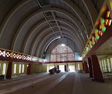

HAUTS-BASSINS


La Cathédrale
Elle situe entre la gare ferroviaire et le marché central de Bobo-Dioulasso.
Elle est d’une architecture moderne. Elle a été construite en 1957 et fut dédiée à Notre Dame de Lourdes. Elle a été ouverte au culte en 1961.
On peut y voir la sculpture du testament (ancien et nouveau) sur les sièges, dans des styles mêlant artistiquement les styles traditionnels et contemporains.
La communauté catholique du Burkina Faso et particulièrement celle de la région des Hauts-Bassins est en liesse. Elle a célébré, ce dimanche 16 mai 2021, la messe de dédicace de la cathédrale Notre-Dame de Lourdes de Bobo-Dioulasso. Cette célébration a été une occasion pour les fidèles de rendre grâce à Dieu qui a permis de rénover ce lieu de culte.
Fermée pendant plusieurs mois pour cause de travaux de réhabilitation, la cathédrale Notre-Dame de Lourdes de Bobo-Dioulasso fait désormais peau neuve. Les fidèles catholiques de la région peuvent désormais y célébrer leurs cultes. La dédicace de l’édifice a eu lieu ce dimanche 16 mai 2021, sous la présidence du Cardinal Jean Zerbo, archevêque métropolitain de Bamako au Mali.
Des fidèles catholiques sortis nombreux pour la dédicace de la cathédrale Cette célébration eucharistique a été une occasion pour les fidèles de rendre grâce à Dieu, celui qui a permis que cette réhabilitation soit une réalité. Entre adoration, chants d’action de grâce et des cris de joie, tous les moyens étaient bons pour les célébrants d’exprimer leur amour en ce Dieu qu’ils croient et qu’ils vénèrent.
Le projet de réhabilitation de cette cathédrale est un pari gagné pour l’archidiocèse de Bobo-Dioulasso, avec à sa tête Mgr Paul Ouédraogo. Initié depuis 2016, ce projet a vu le jour grâce aux efforts conjugués des membres du gouvernement, des autorités coutumières et religieuses et les fidèles catholiques de la ville de Sya. Le coût de réhabilitation de cette bâtisse est estimé à 1 milliard 228 millions de FCFA, y compris les infrastructures connexes.
En effet, la cathédrale Notre-Dame de Lourdes a été construite dans les années 1960, sous l’impulsion de Mgr André Dupont et Daniel Ouézzin Coulibaly. Ouverte au culte en 1961, elle est classée dans le patrimoine touristique du Burkina Faso. Du fait de la nature des matériaux utilisés pour sa construction, de son âge très avancé, de sa forte fréquentation, la cathédrale de Bobo-Dioulasso s’est trouvée dans un état de dégradation avancé. La mise en œuvre d’actions urgentes palliatives devenait dès lors une nécessité impérieuse. C’est ainsi que l’archidiocèse de Bobo-Dioulasso, sous la tutelle de Mgr Paul Ouédraogo, s’est fixée pour mission de mobiliser des ressources afin de mettre en œuvre ce projet de réhabilitation.
Les travaux de réhabilitation de cette cathédrale ont été lancés en juillet 2020. Ces travaux ont beaucoup plus concerné la toiture de l’édifice, les revêtements de l’intérieur, les installations électriques, la sonorisation, ainsi que les salles annexes dont la sacristie et le cagot. À tous ces travaux, on note la réalisation de boutiques de commerce autour de la cathédrale. A ce jour, la réhabilitation a permis de redonner à cet édifice religieux son lustre d’antan.
Mgr Paul Ouédraogo, l’archevêque métropolitain de Bobo-DioulassoLa réhabilitation de la cathédrale est une fierté légitime
La messe d’action de grâce qui consacre la dédicace de l’édifice a été présidée par le Cardinal Jean Zerbo, archevêque métropolitain de Bamako au Mali. Dans son homélie, il a invité tous les fidèles à la prière, à cultiver la paix, le pardon et l’unité. Tout en rendant à grâce pour la rénovation de la cathédrale, le Cardinal Jean Zerbo a salué aussi les efforts des fidèles qui ont permis que ce lieu soit rétabli. Il a souhaité que le renouvellement de la cathédrale soit aussi le renouvellement de la foi des fidèles catholiques en Christ. Par ailleurs, il a salué les efforts de l’archevêque Paul Ouédraogo qui, selon lui, s’est investi pour que ce projet soit une réalité. « Nous sommes animés par l’action de grâce, de reconnaissance et de remerciements pour les moyens que Dieu nous a donnés pour la réfection de cette cathédrale qui fait la fierté de toute la communauté catholique », a-t-il dit.
Roch Kaboré, président du Faso« C’est un grand jour pour la famille diocésaine de Bobo-Dioulasso, parce que ce projet, nous l’avons nourri pendant longtemps et nous avons prié. Dieu merci, avec la générosité des uns et des autres et les stratégies de mobilisation de fonds, nous arrivons à une demeure de Dieu rénovée. Nous sommes heureux de ce joyau », s’est réjoui Mgr Paul Ouédraogo. Il a souhaité également que Dieu renouvelle le cœur des fidèles à l’image de cette cathédrale.
Paul Ouédraogo a saisi l’occasion pour remercier toutes les bonnes volontés qui ont contribué à la réhabilitation de la cathédrale Notre-Dame de Lourdes. Néanmoins, il lance un appel à la mobilisation de ressources. « J’en appel toujours à la générosité des fidèles pour toujours mobiliser les fonds. C’est vrai que les loyers des boutiques vont contribuer pour une bonne part à éponger le crédit au niveau de la banque. Mais si nous nous mobilisons plus, nous allo